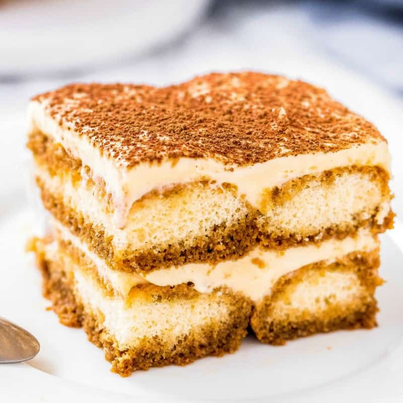

Tiramisu

Description
This delicious and unbelievably easy Tiramisu recipe is made with coffee soaked lady fingers, sweet and creamy mascarpone (no raw eggs!), and cocoa powder dusted on top. It requires no baking and can be made in advance!
Ingredients
- 6 egg yolks
- i cup white sugar
- 1 pound mascarpone cheese
- 6 egg whites, stiffly beaten
- 1/4 cup heavy cream
- 3 tablespoons kirschwasser
- 1 1/4 cups strong cold brewed coffee
- 1 tablespoon unsweetened cocoa powder
Steps
- In a medium bowl beat together the egg yolks and 1/3 cup of sugar. Using a wooden spoon stir in mascarpone cheese, beaten egg whites, cream and kirschwasser; stir until smooth. Set aside.
- Dissolve remaining 2/3 cup sugar in coffee. Quickly, to avoid complete saturation, dip ends of ladyfingers in coffee mixture. Place ladyfingers in a single layer in a 9 x 13 inch glass baking dish. Spread a layer of cheese mixture over the ladyfingers; repeat layers, ending with cheese mixture.
- Cover and refrigerate for several hours. Sprinkle with cocoa just before serving.